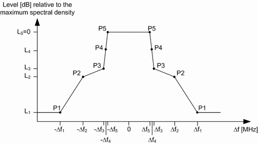
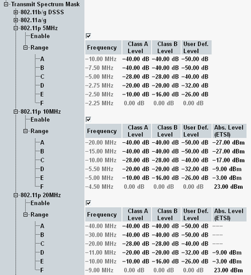

Regulatory masks are defined for IEEE 802.11p stations. The IEEE masks are described in this section. For the ETSI and ARIB masks, see "Transmit Spectrum Mask OFDM, Absolute Limits".
The IEEE masks are defined via points P1 to P5 connected by straight lines. The masks are symmetric relative to the center frequency of the RF analyzer (offset 0 MHz).

The frequency offsets Δf1,...,Δf5 and relative limits LA, ..., LE are specified in annex D.2.3 of standard IEEE 802.11-2012. A distinction is made between different transmit power level classes A to D, as defined in annex D.2.2 of the same standard.
Point | Frequency offset | Relative limit (by power class) | |||
|---|---|---|---|---|---|
(relative to channel BW 5, 10, 20 MHz) | A | B | C | D | |
P1 | Δf1 = 1.5 BW | L1 = -40 dB | L1 = -40 dB | L1 = -50 dB | L1 = -65 dB |
P2 | Δf2 = BW | L2 = -28 dB | L2 = -28 dB | L2 = -40 dB | L2 = -55 dB |
P3 | Δf3 = 0.55 BW | L3 = -20 dB | L3 = -20 dB | L3 = -32 dB | L3 = -45 dB |
P4 | Δf4 = 0.5 BW | L4 = -10 dB | L4 = -16 dB | L4 = -26 dB | L4 = -35 dB |
P5 | Δf5 = 0.45 BW | L5 = 0 dB | L5 = 0 dB | L5 = 0 dB | L5 = 0 dB |
- For the power classes A, B and user-defined, the R&S CMW takes the intersection of the default spectrum mask (see "Transmit Spectrum Mask OFDM, Default Masks") and the one by regulatory restrictions (for user-defined the class C mask).
The (fixed) offsets of the resulting spectrum mask is the union of the default and regulatory transmit spectrum mask offsets: 2 BW, 1.5 BW, 0.55 BW, 0.5 BW, 0.45 BW - For the power classes C and D, no limit check is performed. An accurate limit check is not possible due to insufficient dynamic range.
